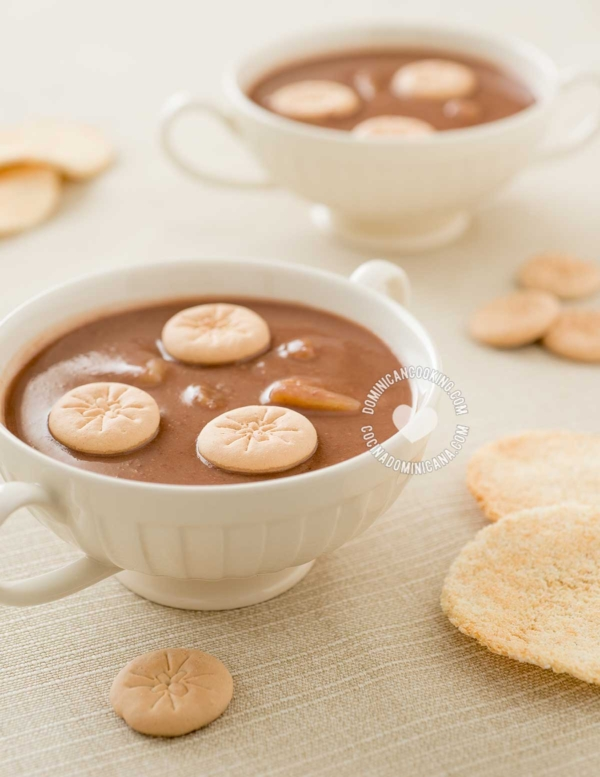

Siempre nos ha sorprendido que de todas nuestras
recetas, Habichuelas con Dulce sea la más popular. Esta es una
extraña combinación de ingredientes para un postre, ¡pero a los dominicanos nos encanta!.

-Ingredientes
4 tazas de habichuelas rojas hervidas y bien blandas
6 tazas de agua en la que hirvieron las habichuelas
2 tazas de leche de coco
3 tazas de leche evaporada , cantidad dividida
2 palitos de canela
½ cucharada de sal
1 taza de azúcar
1 cucharadita de extracto de vainilla
½ lb [0.24 kg] de batatas , peladas y cortadas en cubitos
10 clavos dulces
½ taza de pasas
-Preparacion
Pon el agua y las habichuelas en la licuadora. Cuela y descarta los sólidos. Vierte las habichuelas, la
leche de coco y la leche evaporada en una olla, agrega sal, azúcar, vainilla, canela, clavos y la batata y
cuece a fuego medio-bajo. Cuece hasta que la batata esté blanda. Agrega las pasas y cuece otros 10 minutos.
Revuelve regularmente para evitar que se adhiera al fondo y se queme.
Deja enfriar a temperatura ambiente y luego enfría en la nevera por al menos una hora antes de servir.
Unta la mantequilla en el casabe y cuece en el horno hasta que doren.
Sirve con el casabe a un lado. Pon las galletas en las habichuelas.